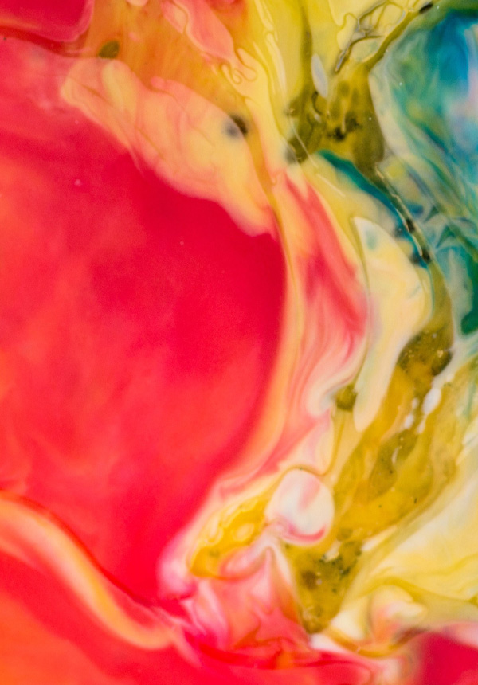
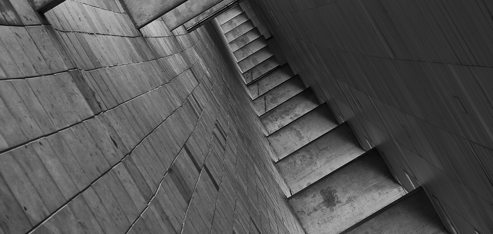
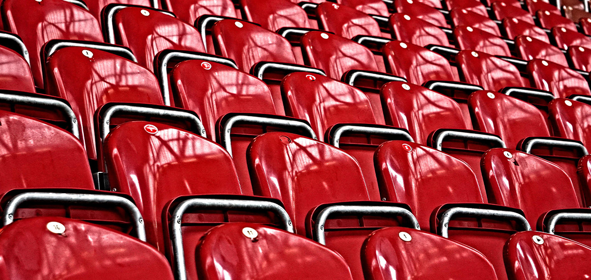

본문콘텐츠영역
금호 문화예술
금호문화재단은 1977년 11월 29일 출범 이래
‘영재는 기르고, 문화는 가꾸고’라는 재단 설립 취지에 맞추어 일찍이 문화예술
그 중에서도 특히 클래식 음악과 미술분야의 영재 발굴과 육성을 위한 다양한 활동을 전개해 왔습니다.
금호 장학 시스템
1997년 장학재단으로 처음 출범한 금호문화재단은
설립 이후 인재들을 양성하고 지원하는데 지속적으로 힘을 기울이며
콘서트 시리즈 및 장학사업을 진행하고 있습니다.
- 
ARTIST
클래식 음악계를 이끄는 금호 연주자들을 만나보세요
연주자검색하기


금호아트센터
-
금호아트홀연세
금호미술관은 현대미술의 흐름을 조망하는
다양한 기획전을 개최하여 전문가와 일반 관객들에게 미적 영감을 제공하였습니다.2000년대 중반 이후로는 디자인 · 건축 영역으로 전시 주제를 확장하면서
일상 속에 녹아 든 예술의 자취를 확인해보고자 노력하고 있습니다.더 알아보기 -

금호미술관
금호미술관은 현대미술의 흐름을 조망하는
다양한 기획전을 개최하여 전문가와 일반 관객들에게 미적 영감을 제공하였습니다.2000년대 중반 이후로는 디자인 · 건축 영역으로 전시 주제를 확장하면서
일상 속에 녹아 든 예술의 자취를 확인해보고자 노력하고 있습니다.더 알아보기 -

금호아트홀 유스퀘어
금호미술관은 현대미술의 흐름을 조망하는
다양한 기획전을 개최하여 전문가와 일반 관객들에게 미적 영감을 제공하였습니다.2000년대 중반 이후로는 디자인 · 건축 영역으로 전시 주제를 확장하면서
일상 속에 녹아 든 예술의 자취를 확인해보고자 노력하고 있습니다.더 알아보기